Единственная папка на рабочем столе в моих сборках. "от Марка Аддерли"
В которой находится активатор, батники чтобы управлять обновлениями,
Обои только из разных версий Windows (Vista, 7, 8.0, 8.1, 10, 11)
ТОЛЬКО инсталяторы программ, типа Chrome, EasyBCD, и др.
Инсталяторы программ созданных мною, а так же курсоры и ярлычки.
Все программы находятся в папках по категории,
в каждой папке по максимум 5 инсталяторов.
В папках только самое нужное после установки.
Подробное содержание
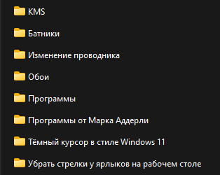Как и говорилось, это папки из единственной папки "от Марка Аддерли"
И что в них находится:
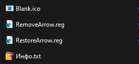Это чтобы убрать стрелки которые нарисованы на ярлыках рабочего стола.
1 набор курсоров в стиле Windows 11, инсталяторы моих программ.
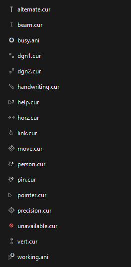 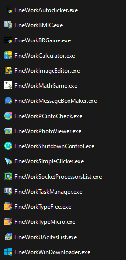Ну и инсталяторы программ:
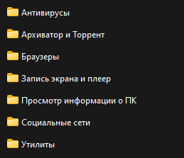 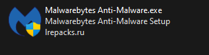 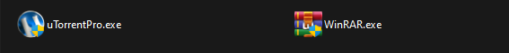 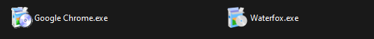 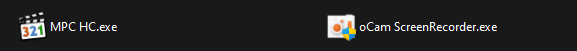 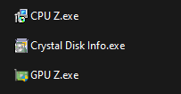 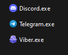 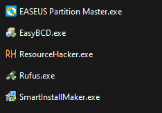